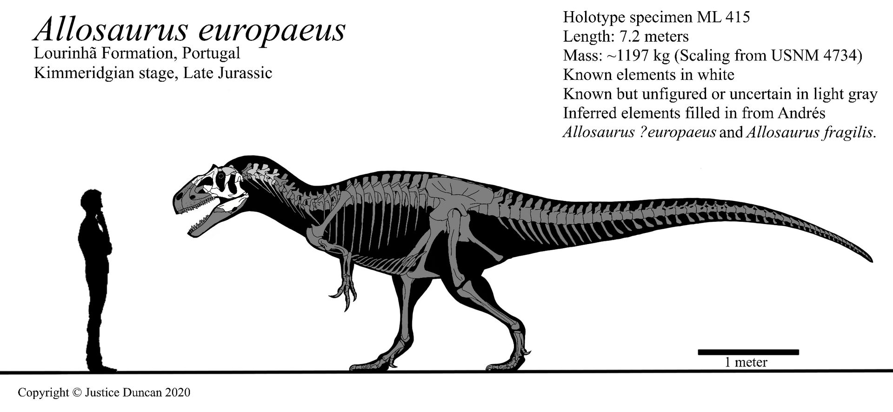

For dinosaur enthusiasts, the word "Jurassic" might picture a giant theropod other than Tyrannosaurus. The Morrison Formation's apex predator, Allosaurus, a fearsome predator with a terrifying bite and unmatched speed for it's size. Allosaurus is the most common, and arguably one of the most well-known Jurassic predators. It was first described on 1877, by Othniel C. Marsh, and the name derives from the Greek words (allos which means "different" or "strange") and (sauros, meaning "lizard" or "reptile"). Marsh found the first Allosaurus fossils in the event known as The Bone Wars, Marsh named it this way because it's vertebrae looked quite different compared to those of other dinosaurs found during that time.
Allosaurus was a bipedal predator and was built like the typical giant theropod, meaning it had had a robust skull that was equipped with dozens of sharp, serrated teeth, a long sloping tail, and large arms with 3 sharp, hooked claws.One of this dinosaur's most distinguished characteristics is the pair of horns above and in front of it's eyes that varied in shape and size, there were also a pair of ridges running on top of the nasal bones that led to the horns. Paleontologists have speculated that these horns were covered on keratin and could have had many uses:
Allosaurus fragilis is the best-known species of Allosaurus, A. fragilis has been estimated to be 8.5 m in length, and weighing 2 tons, but the largest specimen being AMNH 680, has been estimated to measure 9.2 m long and weighing almost 3 tons
Allosaurus europaeus is the smallest known species of Allosaurus, with estimations measuring them at 7m in length, and weighing 1 metric ton. Found in the Lourinhã Formation, Portugal.
The most recently found species during the writing of this article. This species was described on 2020